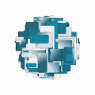
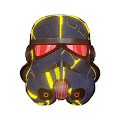
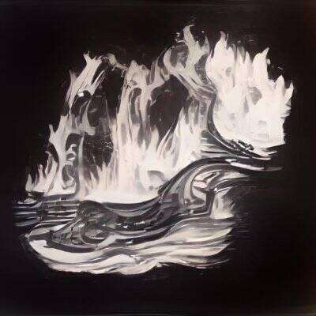
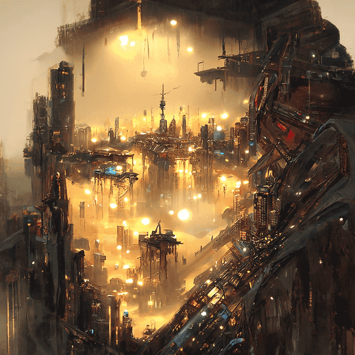
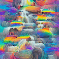
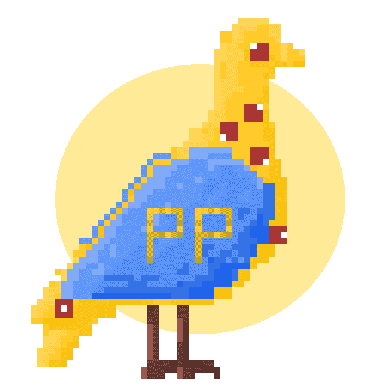
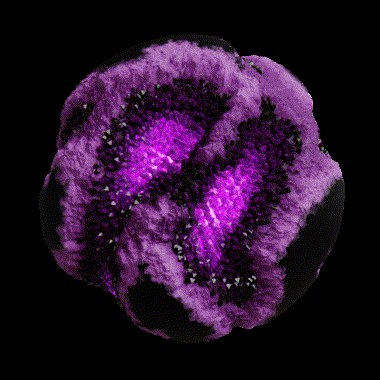
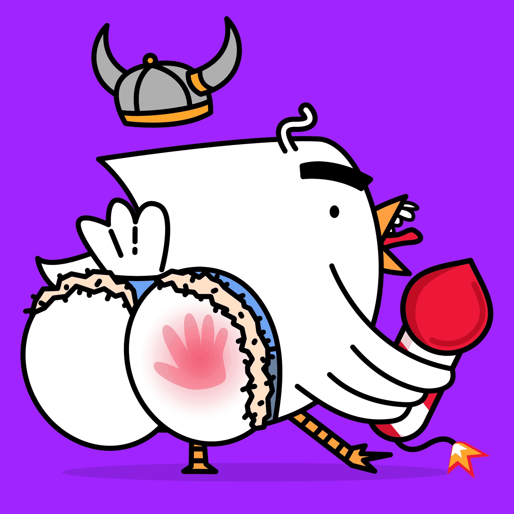

Antoni Tudisco 创意总监和 3D 视觉艺术家 Antoni Tudisco 在德国汉堡出生和长大，在那里他从小学习媒体管理和网页设计与开发编程。与耐克、阿迪达斯、范思哲、谷歌、梅赛德斯奔驰、
Antonym: GENESIS Antonym 是一个 phygital 生活方式品牌，弥合了数字收藏品和实体设计师商品之间的差距。反义词：Genesis 是 8,888 个 NFT 的 Phygital 集合。每个持有人都有资格兑换限量版设计
Antoon's World Originals 安东的世界是一个包含 249 个 1/1 角色的创世纪集合，具有无限的可能性 ▶ 什么是安东的世界原创作品？ Antoon 的 World Originals 是一个 NFT（非同质代币）集合。存储在区块链
Aotaverse Original AOTA的移动单元终于到了。完全 3D 和生成模型，在 AOTAVERSE 与我们见面。 由东方实验室。 Aotaverse 是我们在以太坊上的创世 NFT 集合，由 4 个主要部落组成：Kaanon
APE as ONE APE as ONE 是 3,899 只猿的集合，它们将渗透并超越 Yuga 帝国。我们会一一销毁每个 Yuga NFT。选择你的抵抗猿。#BURNBAYC & #BURNMAYC 让您成为我们中的一员。 APE as O
APE DAO Legends 这一年是 3040 年，现实已被元界永久取代。猿族四处游荡，争夺终极奖励…… APE DAO Legends 将收藏品的精髓带回 NFT。APE DAO 旨在重振构建您最喜欢的角色集合的乐
APE DAO REMIX! 混音！Club 是从作为 APE DAO 起源的前 50 个 BAYC NFT 衍生而来的 5,550 个 NFT 的集合。每个 DAO 的 Apes 都由社区中一些最炙手可热的 NFT 艺术家重新混音。每个 REMIX 有 111 个版本！在
Ape Hater Club 同一群精神病神恨NFTees，现在却变异成了猴子。不一样的NFT，一样的4chan精神，一样的哲学；社区领导。 Ape Hater Club 与 God Hates NFTees 中的恶棍俱乐部相
Ape Invaders Official 5,500 只创世猿执行入侵元宇宙中每个星球的任务。所有 Ape Invaders 将因参与 Planet Invasions 而收集 $Stardust。 西米亚之战被称为永远改变猿类文明轨迹的那一天。就像其
ApeLanders NFT 2,222 名 ApeLanders 在主网上关押了囚犯。 没有路线图，没有官方不和谐，只有艺术！ ▶ 什么是 ApeLanders NFT？ ApeLanders NFT 是一个 NFT（Non-fungible token）集合
Apes In Space NFT 太空猿之家NFT项目由Takeoff发起，1/3的获奖团体Migos。 Apes in Space 持有者将能够质押他们的 NFT，以换取该项目独有的原生代币**$T
Apes of Space VX Official 沙盒高级合作伙伴。6x6 庄园。Apes of Space VX 是一张 NFT 门票，为玩家提供探索独特游戏体验的途径。赚取 $SAND 代币和其他独家奖励！ 每只猿都是独一无二的，
Apes of the Caribbean 4,444 只威风凛凛的猿类正起航掠夺公海。 ▶ 什么是加勒比猿？ Apes of the Caribbean 是一个 NFT（非同质代币）集合。存储在区块链上的数字艺术品集合。 ▶ 加勒比人猿代币
ApesOfSpace 沙盒高级合作伙伴。Apes of Space 正在探索他们在 Metaverse 中的新家！Apes of Space VX 是一张 NFT 门票，为玩家提供探索独特游戏体验的途径。赚取 $SAND 代币和其他独家奖
APETOPUNKS MINTING 已上线，1 APTOPUNK 成本 1 MATIC 将建立一个社区以实现社区的可持续性。持有 Apetopunk 将赋予您对未来实用程序的投票权托管 Matic 和 NFT 赠品。我们的社区成员需要成为一个不和
apileofbones ▶ 什么是骨尖？ apileofbones 是一个 NFT（非同质代币）集合。存储在区块链上的数字艺术品集合。 ▶ 有多少 apileofbones 代币？ 总共有 2,404 个 apileofbones NFT。目前，1,008 位车主的
Apostles: Genesis 你需要一个 BYOKEY 和一个 BYOPill 来兑换你的使徒。1 把钥匙 + 1 颗药丸 = 1 个使徒。使徒仅供 BYOKEY 持有者使用。 ▶ 什么是使徒：创世纪？ Apostles: Genesis 是一个 NFT（非同质代币）
Arabian Camels Antara Universe NFT 系列是受古代阿拉伯战士启发的 NFT 的集合，使爱好者能够成为大事的一部分。 阿拉伯骆驼 NFT 是该系列中的第一个发布。阿拉伯骆驼是生活在以太坊区块链
ARBO Artifacts ARBO 是一款科幻系列和回合制战术 (TBT) 策略游戏。查看官方ARBO 英雄合集以完成您的可玩策略。 ▶ 什么是 ARBO Artifacts？ ARBO Artifacts 是一个 NFT（Non-
ArchienekoNFT 这些基于 Kitty “Archie” 的原始图像的 NFT 可以用作 Archie Metaverse 中的化身！Archie NFT 将在 Archie Metaverse 中发挥至关重要的作用，因为用户将利用这些不可替代的代币购
Arctic Penguins 北极企鹅是 Emily Cao 绘制的 2222 个独特生成的 NFT 的可爱集合。改编自 codeSTACKr，由 Zile Cao 和 Raiyan Siddique 开发。 北极企鹅 NFT - 常见问题（FAQ） ▶ 什么是北极企鹅
Arcus by Rik Oostenbroek Arcus 系列花了我大约 5 年的时间来创作。每个 Arcus 都是不同且独特的，并且是在我创作生涯的不同阶段制作的。这个系列是我作为自由创意者成功的开始，也激励了
ARIES HOT official 以身为女人为荣，由 Wackyboys Dao 随机生成的 1000 个 NFT 集合而成。Aries 由台湾 Youtuber Wackyboys 推出。ARIES 持有者可以参与 Discord 上的专属社区，享受 Aries 为人民服务、为人民服
Arpeggi Genesis Studio Pass Arpeggi Genesis Studio Pass 是第一个完全上链的非生成音乐合集。音乐家第一次可以将自己的作品直接写入以太坊区块链。完全的创意控制。没有第三方存储。没有中间人。 将只
Arq Skulls - Origins Arq Skulls 的起源故事。 收集了 100 个手绘的便利贴、头骨，展示了多年来头骨角色经历的许多阶段和变化。该系列最初于 2017 年 2 月开始，随着时间的推移不断演变，最
 Art For N Art For N NFT - 常见问题（FAQ） ▶ 什么是 N 的艺术？ Art For N 是一个 NFT（不可替代代币）集合。存储在区块链上的数字艺术品集合。 ▶ Art For N 代币有多少个？
 Art Wars | AW 官方账号自 2007 年起通过 OpenSea™ 认证将黑暗面转变为艺术面。 1138 件 NFT 收藏，其中包括 Damien Hirst、Anish Kapoor、D’Fa
 ArtApe_NFT ArtApe 是一项全新的创新。The Boring Ape 的 1:1 艺术只是一个开始。未来我们会有更多的计划。6666件独一无二的艺术品来了 永无止境的花 这是一个新的开始，一个
 ArtBannersByAI 基于知名艺术品的10000条横幅的AI艺术收藏。 ▶ 什么是 ArtBannersByAI？ ArtBannersByAI 是一个 NFT（非同质代币）集合。存储在区块链上的数字
ARTCODE Magazine Redlion NEWS 由 Redlioneye 于 2020 年 8 月创立，现已发展成为一个重视加密教育、NFT 历史并渴望在保持乐趣的同时创造批判性思维的社区。 Redlion News 是第一家 NFT 印刷媒体出版商，并
ArtlessLabs Geometria ArtlessLabs 几何学 艺术家 Geometria 是 6,000 个独特的几何形状动画的集合，这些动画以确定性但随机生成的方式飞来飞去。每一个设计和动画都是完全独特的，不能重复。 每件艺术
 Artwork by Pixcasso 使用算法（人工智能）手动生成的 500 幅艺术品在 Adobe Photoshop 和互联网上的一些不同工具中编辑。用 Pixcasso 粘着他的手指。每个人的钱包里都应该有一件精美的艺术品。从我
 Ascended Pigeons 我们的第一个系列 - Project Pigeon的衍生产品。 为我们在 Discord 中的支持者创建。项目：Pigeon 是我们对 Web3 世界的深入探索。我们正在通过受我们的“鸽子
ASM AIFA All-Stars 40,000 个足球角色，快速、有趣、完全 3D 操纵、全独特和全明星！ 人工智能足球协会 (AIFA) 是即将推出的去中心化赚钱足球游戏，由世界领先的不可替代智能协议 Altered State Machine
ASM AIFA Genesis Altered State Machine 的世界上第一个不可替代的智能首映。 10,000 个独特的创世纪盒子；每个盒子里有 1 个独特的人工智能 ASM 大脑🧠 和 4 个独特的 AIFA 全明星。 人工智能足球协会 (AIFA)
ASM Brains ASM 的工作原理 在许多游戏世界、金融应用程序和元界中创建 AI 代理、竞争并与之交互。创建新的代理，或使用 ASM 为您现有的 NFT 提供大脑。 对于开发者 添加 AI 代理
 ASM Gen II Brains ASM Gen II Brains 🧠，第二代 Non-Fungible Intelligence™。通过基因组挖掘在 AIFA Moon 上注入原始矿物质。大脑能够学习和进化。它们可以跨不同的形式和世界进行互操
Asprey Bugatti La Voiture Noire Collection 第一个 Asprey Bugatti 系列：La Voiture Noire。在 Asprey 的伦敦工作室制作的 261 件雕塑与 NFT 艺术品相关联。每个 NFT 都有布加迪和 Asprey 的品牌颜色，反映了几个世纪的传统，并庆
 Assplosion Assplosion 是 5,000 只爆炸鸟的集合。当您获得一只鸟时，您将获得一次 ASSplosion 尝试。这意味着您可以尝试将随机鸟的屁股炸飞。 但冷静下来，你只会有50%的成功率，这意味


 集合。存储在区块链上的数字艺术品集合。")


 策略游戏。")